<mat-toolbar style="background-color: transparent;">
    <span><button mat-button [matMenuTriggerFor]="user_menu"><mat-icon>person</mat-icon> {{username}} <mat-icon>keyboard_arrow_down</mat-icon></button></span>
    <mat-menu #user_menu="matMenu">
        <button mat-menu-item (click)="logout();">Logout</button>
    </mat-menu>
</mat-toolbar>
<table class="grid-table">
    <tr>
        <td>
            <button mat-raised-button color="accent" style="color: white;" class="grid-button" (click)="goTo('/design_experiment');" [disabled]="roles.indexOf('ExperimentDeveloper') < 0">
                 <p>Design Experiment</p>
            </button>
        </td>
        <td>
            <button mat-raised-button style="color: white; background-color: #f0a30a;" class="grid-button" (click)="goTo('/request_experiment');" [disabled]="roles.indexOf('Experimenter') < 0">
                 <p>Request Experiments</p>
            </button>
        </td>
    </tr>
    <tr>
        <td>
            <button mat-raised-button style="color: white; background-color: #B71C1C;" class="grid-button" (click)="goTo('/experiments');" [disabled]="roles.indexOf('Experimenter') < 0">
                 <p>Manage Experiment</p>
            </button>
        </td>
        <td>
            <button mat-raised-button style="color: white; background-color: #0277BD;" class="grid-button" (click)="goTo('/manage_site')" [disabled]="roles.indexOf('SiteManager') < 0">
                 <p>Manage Site</p>
            </button>
        </td>
    </tr>
</table>
